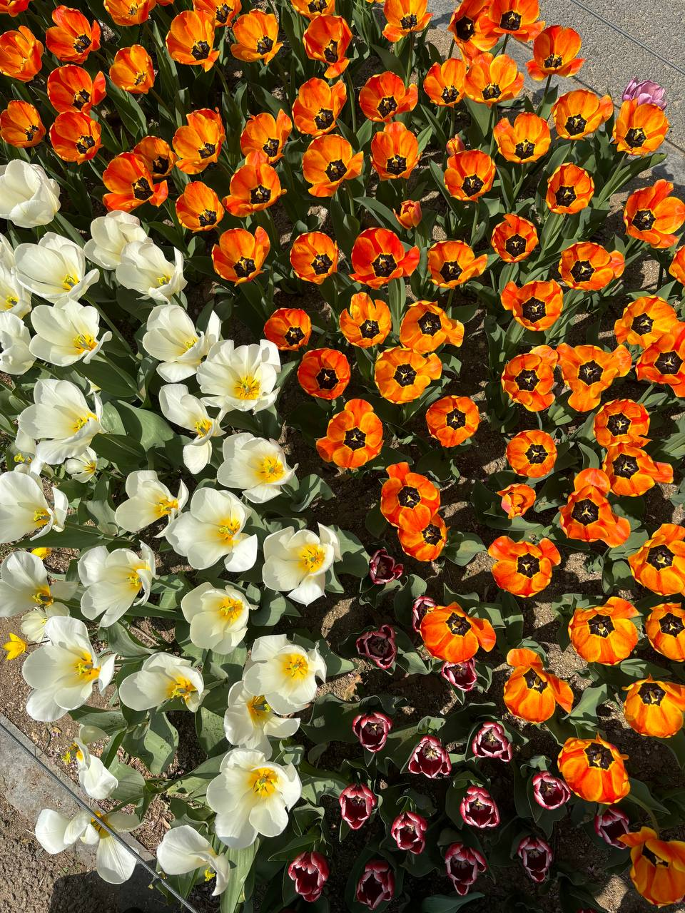

the seat behind the driver's seat
There is this thing about choosing to study abroad. Mine was because when I was finishing my SPM in 2020, the world was facing the COVID-19 pandemic and politically my country was an absolute mess. Schools were messed up, and safety measures were too and I got really frustrated by the people with the power to make decisions for the country at that time. While cramming for my examinations I had this thought that I really wanted to go far away from here. I really wanted to move abroad.
Fast forward to today, it's been about 9 months since I left home to follow this dream of mine.
The first few months were fascinating to me. The fact that I now live in a country with an efficient public transportation system, smart disaster management, a walkable city, interesting cafes, and the list goes on. I am definitely living a better life here, even though I have not yet figured out everything yet.
I realized that I left home in exchange for something better.
I like winter and when it gets warmer the flowers start to bloom
Cherry blossoms,
Azaleas,
Roses,
Wildflowers,
And soon the leaves will turn orange again.
Empty bus rides around Seoul when it was raining made me ponder
And I realized,
I didn't leave Malaysia because I hated it.
And the thing about moving abroad is it teaches you to appreciate both; what you used to have and what you have now.
I left the comfort of driving a car in exchange for an efficient public transportation system.
I left the comfort of Malaysian food in exchange for a bowl of tteokbokki.
I left the comfort of having my family around to help, in exchange for independence and self-discovery.
I left the comfort of living in a big house, in exchange for the calmness of having a river stream in my neighbourhood.
I now get to enjoy Korean food almost every day but I still miss nasi lemak at home.
I get to buy kkwabaegi in the evenings after school but I miss coming home to pisang goreng.
I can understand Korean but these people here have no idea how funny I am in my own language.
I get to cycle around Han River but it must be better if I get to do it with my father.
It is not that I hated my country, it was the fact that I wanted to embrace change.
And if you ask me which seat is the best on an empty bus,
It is the seat behind the driver’s seat.
September 2023
keep going